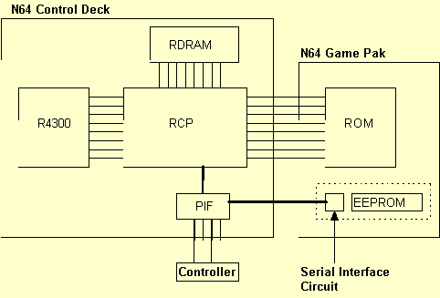

1.7
1.7
Nintendo 64 Developers Newsletters will be published periodically, as needed. These feature software and hardware system anomalies, which have been discovered, and their solutions and/or work-arounds. Development tips will also be included.
|  |
Previously, there was only 4k-EEPROM. So, EEPROM functions do not correspond to 16k-EEPROM for previous versions of NINTENDO OS 2.0H. When creating an application which uses 16k-EEPROM for a previous OS of 2.0H, a patch for 16k-EEPROM is necessary.
It is also possible to store data for ten years. If it won't write anew for more than 10 years, an electric charge of memory cells may become weak gradually and it may become impossible to read data correctly.
To avoid these problems, it is recommended to maintain the reliability of data using supplementary data such as a check sum or a parity bit
The command osEepromLongWrite uses the CPU timer to create the required 15 msec interval. The timer is set to interrupt after 15 msec, while the thread that called the function goes to the wait status.
This function will check if EEPROM is there. If it exists, this will check which type it is.
If a return value is 1 (defined by EEPROM_TYPE_4K), 4k-EEPROM is there. If a return value is 2 (defined by EEPROM_TYPE_16K), 16k-EEPROM is there. If a return value is 0, there is no EEPROM. Also, if there is a hardware-related (communication path) error, 0 will be returned. If EEPROM_TYPE_16K is returned when 4k-EEPROM is equipped, or EEPROM_TYPE_4k is returned when 16k-EEPROM is equipped, a wrong game pak may be used, or a game pak may be broken. The application program must be stopped.
s32 osEepromWrite(OSMesgQueue *mq, u8 address, u8 *buffer)
This function will write an 8 byte data to an EEPROM address (if 4k-EEPROM, 0 - 63, and if 16k-EEPROM, 0 - 255). If the write command is sent to an interface circuit correctly, 0 will be returned. If the address is not a value within a correct range, -1 will be returned. If EEPROM is not there (due to a communication path related problem), or an interface circuit does not respond, 8(CONT_NO_RESPONSE_ERROR) will be returned.
s32 osEepromRead(OSMesgQueue *mq, u8 address, u8 *buffer)
This function will read an 8 byte data from an EEPROM address (if 4k-EEPROM, 0 - 63, and if 16k-EEPROM, 0 - 255). If the data is read correctly (if there is no communication path related error), 0 will be returned. If the address is not a value within a correct range, -1 will be returned. If EEPROM is not there or an interface circuit does not respond, 8 (CONT_NO_RESPONSE_ERROR) will be returned.
s32 osEepromLongWrite(OSMesgQueue *mq, u8 address, u8 *buffer, int length)
This function will write data of continuous 8 x length bytes to an EEPROM address (if 4k-EEPROM, 0 - 63, and if 16k-EEPROM, 0 - 255). As a matter of fact, it only calls osEepromWrite a length time within the function. However, it is designed to wait for 15 milli-seconds for each writing using a CPU timer. As for a return value, 0 will be returned when all the write commands (length times commands) are sent to an interface circuit correctly, just like with the case of osEepromWrite. If the address is not a value within a correct range, -1 will be returned. If EERPOM is not there or an interface circuit does not respond, 8(CONT_NO_RESPONSE_ERROR) will be returned.
s32 osEepromLongRead(OSMesgQueue *mq, u8 address, u8 *buffer, int length)
This function will read data of continuous 8 x length bytes from an EEPROM address (if 4k-EEPROM, 0 - 63, and if 16k-EEPROM, 0 - 255). In fact, in only calls osEepromRead a length time within the function. As for a return value, 0 will be returned when all the commands (length times commands) are read correctly, just like with the case of osEepromRead. If the addess is not a value within a correct range, -1 will be returned. If EEPROM is not there or an interface circuit does not respond, 8(CONT_NO_RESPONSE_ERROR) will be returned.
#include#define NUM_MESSAGE 1 OSMesgQueue siMesgQueue; /* Message queue for SI */ OSMesg siMesgBuf[NUM_MESSAGE]; /* Message buffer for SI */ OSMesg dummyMessage; /* Dummy message to put in queue */ static OSContStatus sdata[MAXCONTROLLERS]; /* Controller port status */ /* Write data to all 512 bytes of EEPRom. */ int save_eeprom(OSMesgQueue *mq, u8 *buffer) { int i, ret = 0; /* Confirm EEPROM communication */ if ( osEepromProbe(mq) != 1) return -1; for (i = 0; i < EEPROM_MAXBLOCKS ; i++) { /* Write data to EEPROM */ ret |= osEepromWrite(mq, i, buffer) ; /* Wait 15msec */ WAIT_15_M_SEC() ; } return ret; } /* Read all 512 bytes of EEPRom. */ int load_eeprom(OSMesgQueue *mq, u8 *buffer) { int i,ret = 0; /* Confirm EEPROM communication */ if ( osEepromProbe (mq) != 1 ) return -1; /* Read EEPROM data */ for(i = 0; i < EEPROM_MAXBLOCKS ; i++) ret |= osEepromRead(mq, i, buffer) ; return ret; } void main_proc (void) { /* Buffer for writing 512 bytes */ u8 save_buffer [EEPROM_MAXBLOCKS * EEPROM_BLOCK_SIZE] ; /* Buffer for reading 512 bytes */ u8 load_buffer [EEPROM_MAXBLOCKS * EEPROM_BLOCK_SIZE] ; /* Controller data */ static OSContPad rdata [MAXCONTROLLERS] ; int ret = 0; u8 p; /* Assign siMesgBuf as message queue's area. */ osCreateMesgQueue(&siMesgQueue, siMesgBuf, NUM_MESSAGE) ; /* Set to send dummyMessage to si message queue at interrupt */ osSetEventMesg(OS_EVENT_SI, &siMesgQueue, dummyMessage) ; /* Checks controller's connection status. */ osContInit(&siMesgQueue, &p, &sdata[0]) ; while(1) { /* Controller connected. */ if (p) { /* Activate trigger to read data. */ osContStartReadData(&siMesgQueue) ; /* Wait for message from si */ osRecvMesg(&siMesgQueue, NULL, OS_MESG_BLOCK) ; /* If No. 0 controller connected */ if(p & 0x1) { /* Copy data from controller to rdata */ osContGetReadData(&rdata[0]) ; /* A of No. 0 controller pressed */ if( rdata[0].button & CONT_A ) { /* Saves save_buffer data to EEPROM */ ret = save_eeprom(&siMesgQueue, save_buffer) ; if( ret ) ERROR_PROC_1 ( ) ; /* Error processing */ } /* B of No. 0 controller pressed */ if( rdata[0].button & CONT_B ) { /* Load EEPROM data to load_buffer */ ret = load_eeprom(&siMesgQueue, load_buffer) ; if( ret ) ERROR_PROC_2 ( ) ; /* Error processing */ } } /* if(p & 0x1) */ } /* if(p) */ } /* while(1) */ }